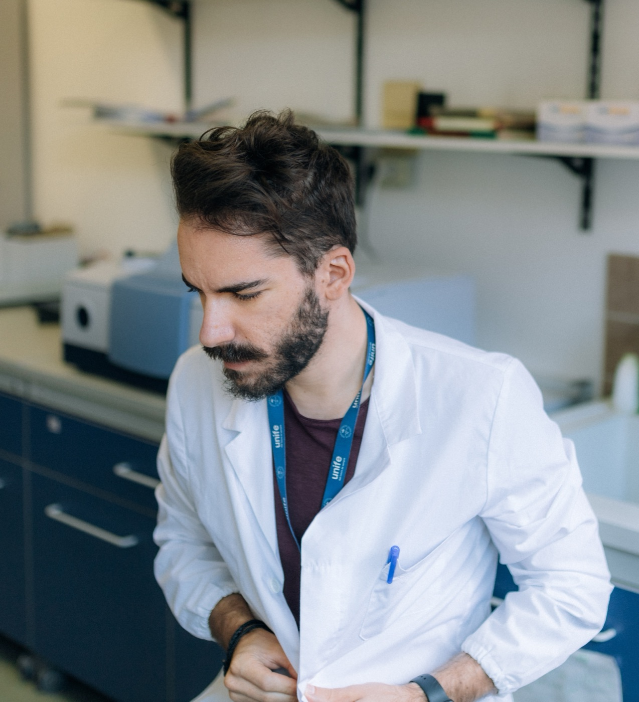

Biocatalysis and biotransformations
Development of selective enzyme-based processes for the synthesis of high-value molecules, with attention to yield, selectivity and sustainability.
I am Federico Zappaterra, a researcher in Industrial Chemistry at the University of Ferrara, Italy. I work on biocatalysis, sustainable chemistry and bio-based processes, and I have a strong interest in university teaching, science communication and the thoughtful use of digital tools and artificial intelligence.

Profile
Researcher, lecturer, science communicator
A path that brings together scientific research, university teaching and digital communication.
About
I work where applied research, sustainable chemistry and knowledge transfer meet. In my research I focus on biocatalytic processes, the valorisation of bioactive molecules, immobilised enzymes and experimental strategies for process optimisation.
In teaching and outreach, I want to make science easier to understand, building on structure, method and critical thinking.
That is why I also work on effective presentations, digital tools, academic workflows and artificial intelligence applied to studying and science communication.
Research
The areas where I focus my experimental work, process optimisation and research design.
Development of selective enzyme-based processes for the synthesis of high-value molecules, with attention to yield, selectivity and sustainability.
Study of enzymatic systems, especially lipases, for esterifications, hydrolyses and transformations of industrial and bio-based interest.
Processes oriented towards green chemistry, the bioeconomy and the valorisation of renewable resources, with a concrete focus on industrial innovation.
Design of supports and immobilisation strategies to improve the stability, reusability and robustness of biocatalysts.
Use of molecular docking to interpret enzyme-substrate interactions and support the rationalisation of experimental results.
Statistical and experimental approaches for robust process optimisation, with particular attention to critical variables and their interactions.
An up-to-date selection of my most recent publications, with direct access to each article through its DOI or the publisher's page.
Article · 2026
Pharmaceutics
Read the articleArticle · 2026
ChemistryOpen
Read the articleConference abstract · 2026
Article · 2026
Article · 2025
Polymers
Read the articleArticle · 2025
BioTech
Read the articleTeaching
Teaching is where understanding, rigour and intellectual independence are built.
My teaching page at the University of FerraraApproaches to teaching chemistry with more clarity and structure, and with attention to how students learn.
Strategic use of slides, examples, narrative flow and visual hierarchy to explain complex scientific content well.
Training students to interpret data, recognise methodological limits and reason beyond passive memorisation.
Turning the rigour of research into more accessible language without losing precision or real complexity.
YouTube and outreach
A place where science communication meets practical usefulness. The channel, in Italian, combines chemistry, study strategies, artificial intelligence, digital tools and ideas on how to learn and communicate better.
YouTube playlist
Videos for students and researchers who want to use smart tools without falling into common mistakes.
Open the playlist on YouTubeYouTube playlist
Videos on effective slides, narrative structure, design and communication for school, university and research.
Open the playlist on YouTubeAI, digital tools and workflows
I am interested in AI not as a gadget, but as a thoughtful extension of academic work: studying, summarising, designing presentations, productivity, writing and organising workflows for students and researchers.
Support for understanding, rephrasing, reasoned summaries and building smarter concept maps.
Watch the videos on YouTube (in Italian)Thoughtful use of digital tools to build clearer and more effective slides, narrative structures and teaching materials.
Watch the videos on YouTube (in Italian)Practical systems that bring together technology, organisation and communication in studying, research and science content.
Watch the videos on YouTube (in Italian)Collaborations
This website is also a point of contact for anyone looking for someone who moves between research, university teaching and outreach with a serious and up-to-date approach.
Talks on biocatalysis, sustainability, chemistry education, AI and science communication.
Projects that bring advanced scientific content closer to students, the general public and educational settings.
Development of materials, formats and learning paths for universities, events, digital channels and training.
Collaborations that connect chemistry, innovation, education and digital tools.
Contact
The quickest way to reach me is by email. You can also find my online profiles below.
Email: federico.zappaterra@unife.it
Affiliation: University of Ferrara · Department of Chemical, Pharmaceutical and Agricultural Sciences
YouTube: @biologicalgathering
LinkedIn: federico-zappaterra
Quick contact
For collaborations, seminars, workshops, teaching activities or science outreach projects, you can contact me directly by email or through my online profiles.